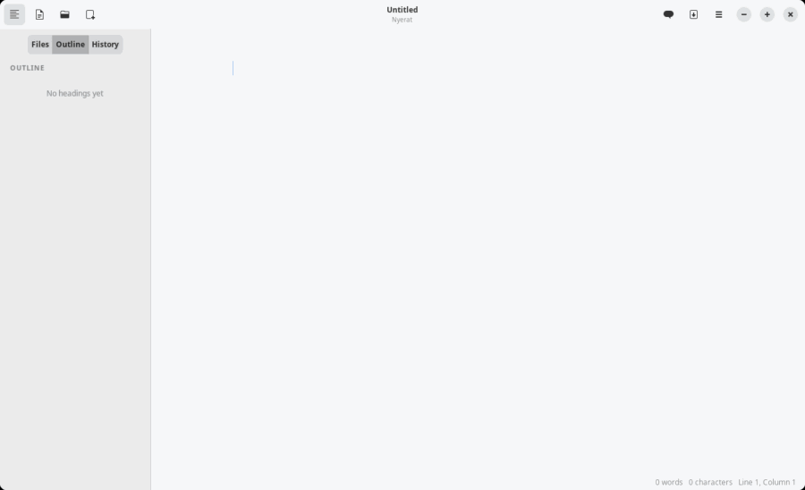
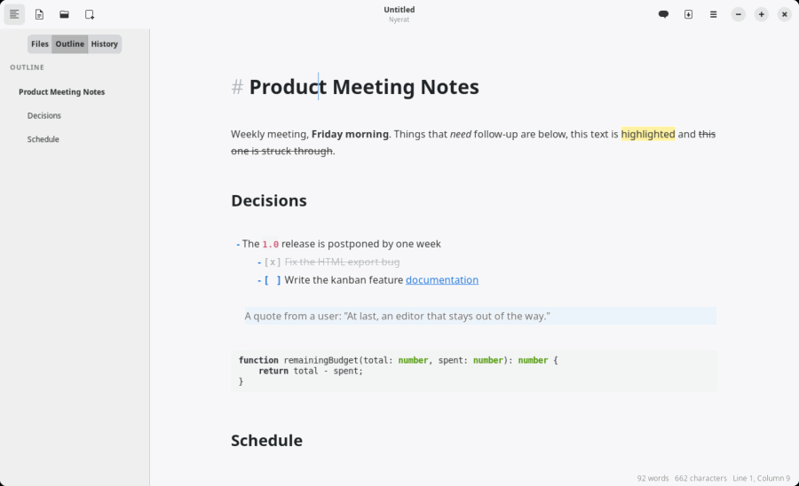
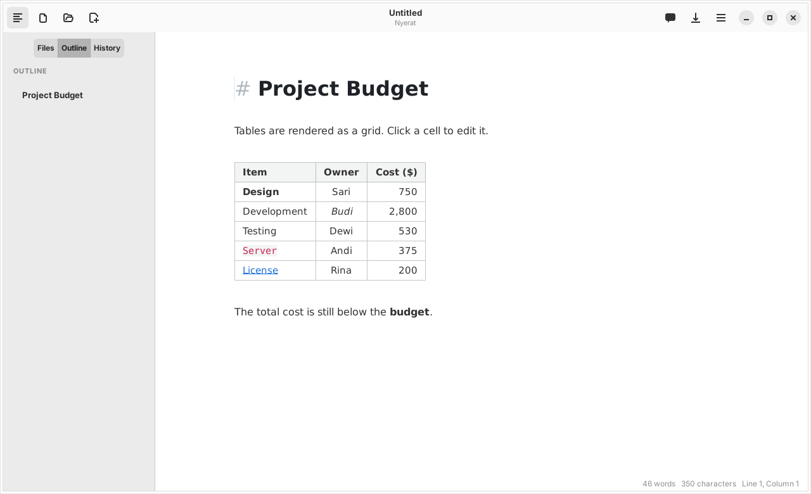

Workspace
The Markdown editor
There is no separate preview panel. The text is shown formatted right away, and the Markdown syntax appears only on the line where the cursor is.

Live formatting
- Headings, bold, italic, strikethrough (
~~), highlight (==), inline code, links, and images are formatted right away. - Syntax such as
**,==, or[]()appears again when the cursor enters its line. - Nested quotes
>>are indented further, up to three levels. - Links are opened with Ctrl+click; relative paths are computed from the folder of the file, and links to Markdown files open in a Nyerat tab.

Links between documents [[ ]]
As in Obsidian, notes are linked to each other by name, without writing a path.
| Write | Result |
|---|---|
[[Daily Notes]] | A link to Daily Notes.md in any subfolder of the work folder |
[[Daily Notes|yesterday]] | Shown as “yesterday” |
[[Plan#Budget]] | Opens Plan.md and then jumps to the heading “Budget” |
[[#Budget]] | Jumps to a heading in the same document |
[[archive/Plan]] | Picks a specific file when several have the same name |
- On other lines only the name (or the text after
|) is shown as a link; the brackets appear again when the cursor enters that line. - Ctrl+click opens the note in a tab. Names are matched without the extension and without distinguishing upper and lower case; with duplicate names, the file in the same folder as the source document is used, then the one with the shortest path.
- A note that does not exist yet is opened as an empty document next to the source document. The file is only created when it is saved, so a mistaken click leaves no empty file.
- Typing
[[shows file name suggestions. ↑/↓ choose, Enter or Tab inserts the name together with]], Esc closes the suggestions. - HTML export writes
[[Name]]as a link toName.md.
Lists and tasks
- Enter continues a list, a numbered list, a task list, and a quote; Enter on an empty item ends it.
- Tab / Shift+Tab set the indentation of an item.
- A
- [ ]box can be checked with a click.
Tables as a grid
A table is drawn with cell lines, a bold header, and left/center/right alignment. When the cursor enters it, its raw text appears for editing; click a cell to edit that cell right away.
- Tab / Shift+Tab move between cells; in the last cell, Tab adds a row.
- Enter moves to the next row; on the last empty row, it leaves the table.
- The ☰ menu → Edit Table adds/deletes rows and columns, sets the alignment, and tidies the columns (Ctrl+Shift+T).
- A table that is wider than the text column is narrowed, and cut-off text is given “…” with the full contents as a tooltip.

Colored code blocks
The contents of a code block are colored according to its language (```js, ```python, ```rust, and hundreds of other languages from GtkSourceView), with a color scheme that follows light or dark mode.
Images and zoom
An image  is shown below its line, from a local file or the internet. A double click (or the ☰ menu → Zoom Image) opens the viewer: the mouse wheel zooms at the pointer, +/−, 0 for 100%, F to fit the screen, drag to pan, Esc closes.
View modes
| Mode | Function | Shortcut |
|---|---|---|
| Focus | Dim paragraphs other than the one being edited | F8 |
| Typewriter | The active line is always in the middle of the screen | F9 |
| Source | Show all the syntax; images, table grids, and diagrams are hidden | Ctrl+/ |
| Dark | Automatically follows the system theme the first time it is opened | Ctrl+Shift+D |
Saving and exporting
- Autosave (on by default): a document that already has a file is saved 1 second after you stop typing, in the background so that it does not hold up typing.
- A warning appears before closing if there are unsaved changes.
- HTML export (Ctrl+Shift+E): one standalone HTML file with CSS. Diagrams in the exported file load Mermaid from a CDN.